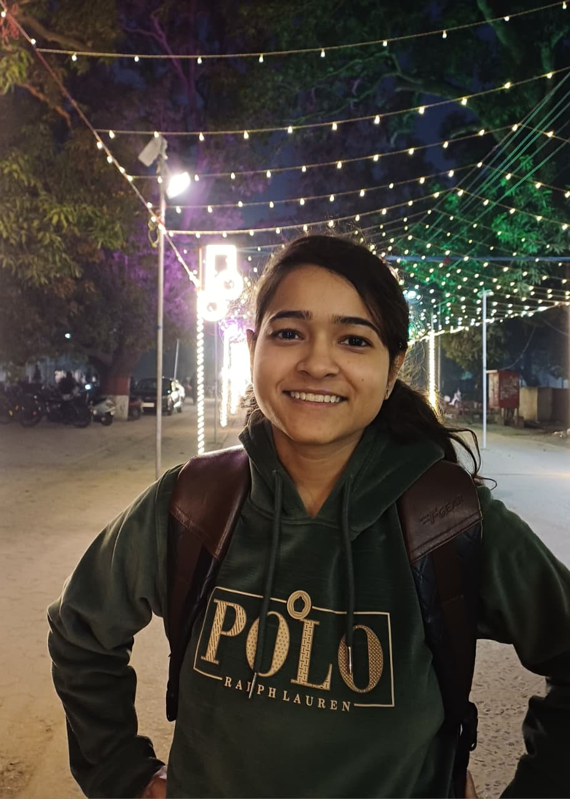

AI Engineer | Computer Vision | Agentic Systems
Hello, I'm
Hello, I'm
Pragati
Working on Agentic AI, Computer Vision, Deep Learning, and Machine Learning. B.Tech Computer Engineering @ Aligarh Muslim University.
Currently building AI pipelines at Savgen while researching 3D reconstruction and visual understanding at IIT BHU.
Co-author of the NeurIPS MusIML workshop paper "From Rules to Pixels (LaGPS)".